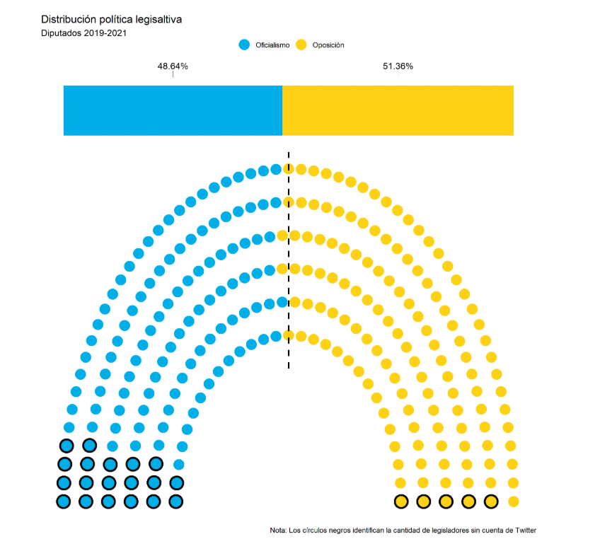
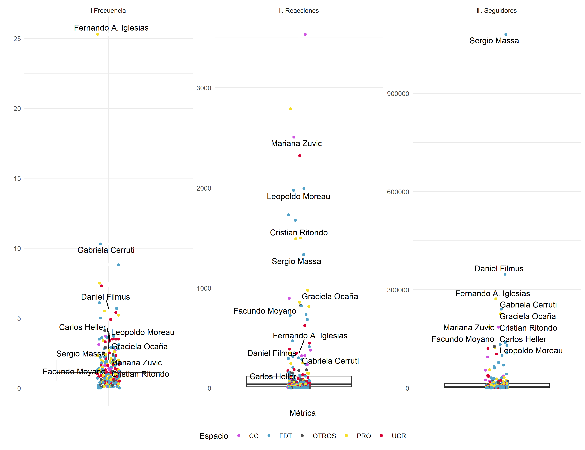
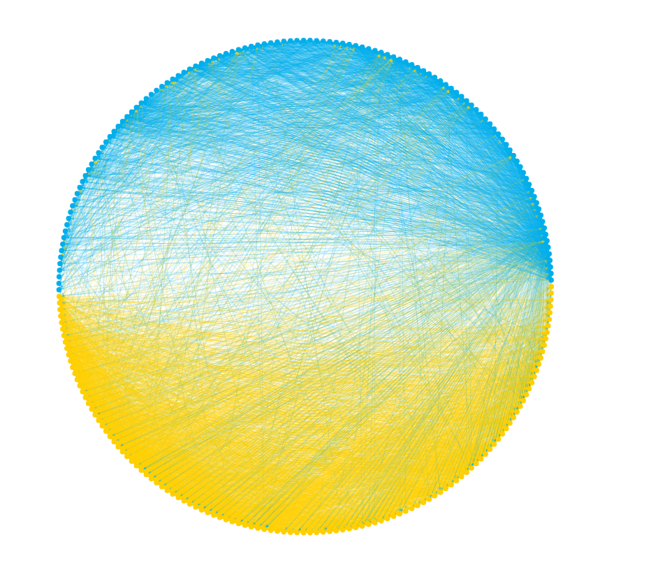
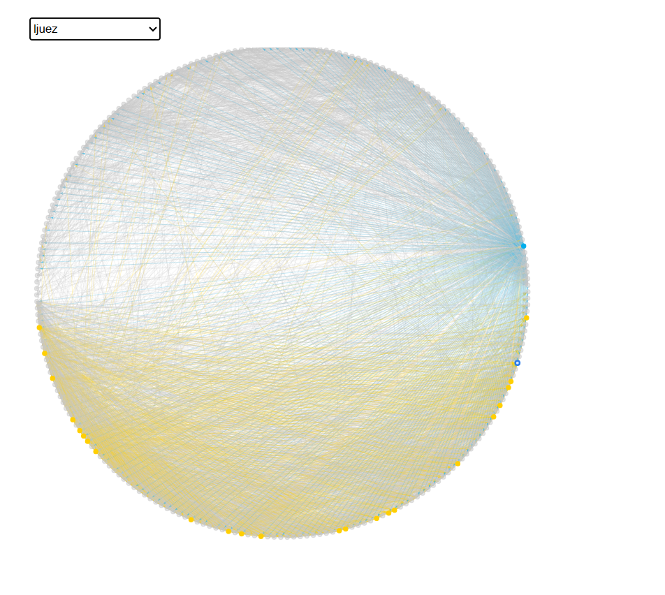
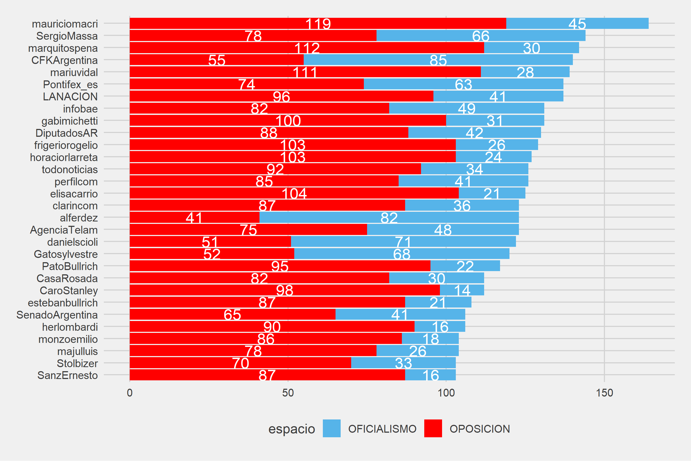
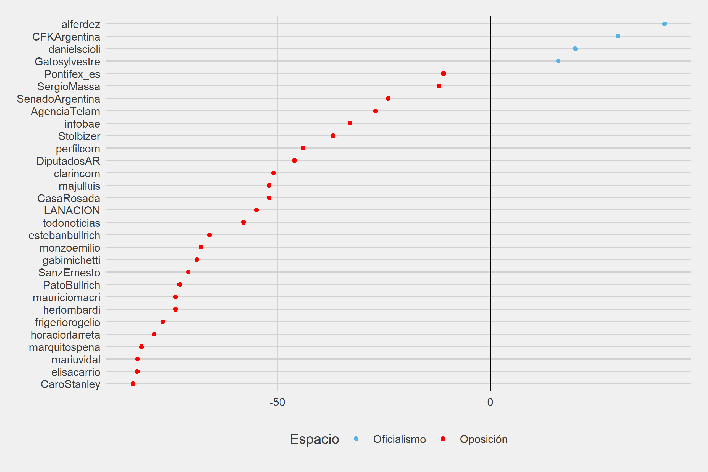
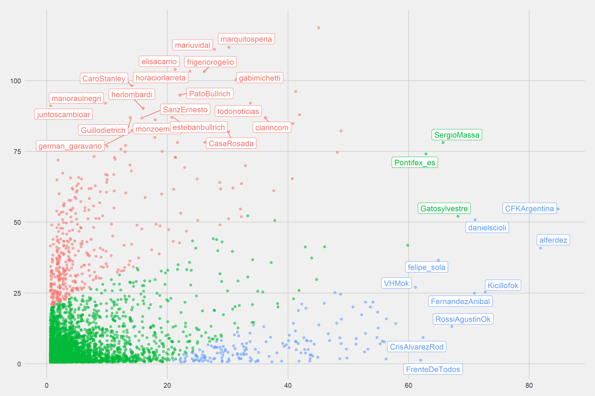
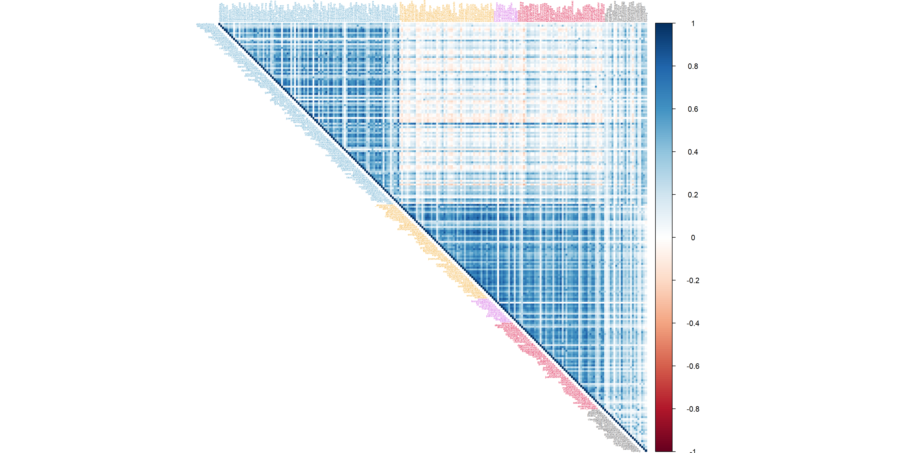
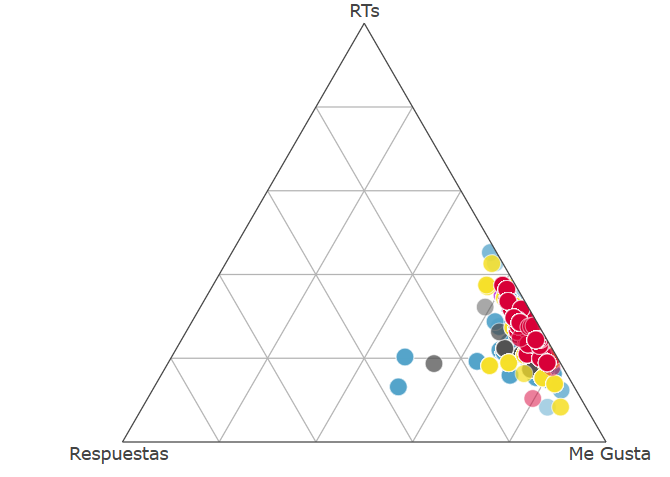

(Juan Pablo Ruiz Nicolini, Camila Higa, Franco Galeano y Carolina Rossi1)
La conformación de un nuevo cuerpo legislativo para los próximos dos años en Argentina nos motivó a hacer un análisis de la estructura, funcionamiento e interacciones de las cuentas de Twitter de los legisladores nacionales que conformarán el Congreso de la Nación durante el periodo 2019 - 2021.
Tal como hiciéramos respecto a las cuentas de legisladores pertenecientes al Senado de la Nación (disponible acá), en los siguientes apartados nos proponemos hacer una radiografía de la Cámara de Diputados.
Diputados2.0
Un \(9.3\%\) de los miembros de la cámara baja (\(24/257\)) no tiene cuenta activa en Twitter. El gráfico que sigue muestra tanto la distribución política como la cantidad de legisladores de cada espacio por fuera del ecosistema digital a ser analizado. El \(80\%\) de ellas corresponden al oficialismo y el \(20\%\) a la oposición.
Qué sabemos de las cuentas de diputadas y diputados que están presentes en Twitter?
Que si agregamos todos sus “amigos” (follows) el total asciende a más de \(248_{mil}\) cuentas. Pero al contar usuarios únicos el número se reduce a poco más de \(123.7_{mil}\).
Aunque una cuenta sigue típicamente a unos \(598\) usuarios, el promedio se eleva hasta \(1058\) cuentas. Ello se debe a que en la distribución se observan cuentas que son mucho más seguidoras. Tal es el caso de
LucilaLehmanncon sus más de \(22_{mil}\) seguidos, por ejemplo.Por otro lado, analizamos tres indicadores para medir al funcionamiento individual de cada una de las cuentas de la muestra: Frecuencia y Reacciones promedio de cada publicación y el Alcance potencial, medido en cantidad de seguidores de cada perfil.

Además de las observaciones individuales los gráficos de cajas muestran la distribución. La línea horizontal representa la mediana de cada uno de los indicadores.
Estos son los valores que dividen a las muestras en dos mitades:
- Frecuencia promedio: \(0.5\) tuits por día
- Reacciones promedio por publicación: \(38.5\)
- Seguidores: \(5063\)
Se nominaron, además, las cuentas de los \(10\) perfiles de mayor alcance potencial (\(+\) seguidores), para todos los indicadores.
Métricas de funcionamiento de las cuentas:
\(1.\) Alcance potencial
Definimos el alcance potencial de cada cuenta en función de la cantidad de seguidores. El gráfico siguiente muestra las primeras \(10/233\). Con \(1.1_{millones}\) de seguidores, la cuenta del presidente de la Cámara de Diputados Sergio Massa se destaca por sobre la del resto de las diputadas y diputados del ranking. Le siguen Daniel Filmus (\(348_{mil}\)) y Fernando Iglesias (\(272_{mil}\)).

Pero, además de considerar la cuenta absoluta, también puede evaluarse en relación a la cantidad de cuentas que ellos mismos siguen (construyendo un ratio \(seguidores/seguidos\)). En el gráfico esto está representado por el tamaño del círculo: cuanto más grande, mayor el valor del ratio. Así, por ejemplo, la cuenta de Leopoldo Moreau tiene el ratio más bajo (\(130_{mil} / 1840 = 70.9\)), por lo que el punto es casi indistinguible del segmento. Si lo comparamos, por ejemplo, con la cuenta de Daniel Filmus los valores serían los siguientes: \[348.6_{mil} / 598 = 560.6\]
En la cola del ranking \(8/10\) cuentas no superan la barrera de los \(300\) seguidores y \(6\) de ellos tienen menos de \(200\).

\(2.\) Frecuencia de publicaciones
Otro comportamiento que podemos medir se focaliza en el nivel de actividad. Es decir, en la frecuencia promedio con la que las cuentas de diputadas y diputados publican contenido orgánico. Para ello analizamos la totalidad de las publicaciones de cada cuenta para los últimos \(6\) meses. El principal elemento a destacar es la distancia entre el líder del ranking y el resto de las cuentas de sus colegas. Con \(25.3\) publicaciones diarias más que duplica a la escolta Gabriela Cerruti (\(10.3\)).

\(3.\) Interacciones
Por último, analizamos el promedio de interacciones (suma de Me Gusta y Retweet que recibe una publicación determinada).
Solo \(4\) cuentas superan las \(2000\) interacciones promedio por publicación: Paula Oliveto, WW, Mariana Zuvic y Mario Raul Negri.

Los del bloque sean unidos…
¿Cómo se vinculan las cuentas de legisladores según los espacios políticos? Para dar una respuesta podemos indagar cuáles de las cuentas de legisladores es seguida por sus pares en Twitter. De este modo es posible construir un grafo que nos permita describir la intensidad de los vínculos. Esto es, la relación de amistad entre miembros de las cámaras.

- Cada círculo corresponde a una cuenta de una diputada o diputado (nodo).
- Las flechas (aristas) marcan la dirección de la conexión. Esto es, quién sigue a quién.
- Los colores son asignados luego de haber agrupado cada una de las cuentas con un método de clusterización random walk, el cual ordena las cuentas en función de las relaciones entre las mismas definiendo comunidades.
Previsiblemente se visualiza una mayor intensidad de conexiones entre miembros de cada uno de los espacios políticos: mayor cantidad de conexiones azules entre miembros del Frente de Todos y mayor cantidad de conexiones amarillas entre los de la oposición.
Una versión interactiva nos permite seleccionar a los distintos usuarios para visualizar la red que conforman sus relaciones individuales. Tomemos como ejemplo los vínculos que se generan con la cuenta ljuez como nodo de referencia. Allí se observa que casi la totalidad de sus vínculos se dan con el cluster más afin a su espacio político salvo con una única cuenta del oficialismo: sergiomassa.

- Tres diputadas son seguidas por solo un colega:
MelinaDelu,Adriana_Ruarteygraciela_navarr. - Con \(119\) colegas que lo siguen,
sergiomassalidera el ranking. Esto también es cierto cuando se restringe la cuenta para analizar solamente quién es el más seguido por opositores (\(65\)). Si calculamos en cambio quién es más seguido únicamente por miembros de un mismo espaciomarioraulnegrilidera el ranking (\(88\) seguidores). - \(50\) de las cuentas siguen a menos de \(10\) de sus pares.
sergiomassaes también el más seguidor con \(146\) de sus pares entre sus follows. Lo secunda_alvarogonzalezcon \(98\).
Ecosistemas políticos en Twitter
Más allá del vínculo específico entre miembros de la Cámara de Diputados, la información recolectada nos permite avanzar sobre la totalidad de las cuentas. Como veremos a continuación, al analizar el listado de seguidos/amigos de cada legislador podemos hechar luz sobre sus posicionamientos políticos con información sobre sus conexiones que excede los límites de la Cámara. Sabemos que la suma de amigos de diputados alcanza unas \(123_{mil}\) cuentas distintas. Pero, ¿cuáles son más representativas entre los seguidos por diputados? ¿Qué diferencias se pueden encontrar según el alineamiento político?
Cuentas más seguidas
El gráfico que sigue muestra las 30 cuentas más seguidas por diputados argentinos. Entre ellas se destacan cuentas institucionales (@DiputadosAR, @CasaRosada y @SenadoArgentina); de medios (@LANACION, @infobae, @AgenciaTelam, @todonoticias y @perfilcom); de periodistas (@Gatosylvestrey @majulluis) y de dirigentes políticos (@mauriciomacri, @marquitospena, @CFKArgentina, @mariuvidal, y @alferdez, entre otros).

La diferencia de seguidos por espacio político en la Cámara de Diputados son notorias para esta muestra. Solamente \(4/30\) cuentas analizadas son más seguidas por legisladores pertenecientes al Frente de Todos (alferdez, CFKArgentina, danielscioli y Gatosylvestre). Las cuentas Pontifex_es y SergioMassa, en tanto, son las más cercanas a una zona de empate. Al revés, la mayoría de las cuentas de medios y periodistas y, más lejos, dirigentes de la oposición tienen un claro sesgo de seguidos a favor de diputadas y diputados de ese espacio político.

Para profundizar al respecto nos propusimos en primer lugar replicar el análisis de Michael Kearney sobre el 116º Congreso de Estados Unidos analizando las cuentas de les diputades de Argentina.
Cuentas seguidas por diputadas y diputados de Argentina (2019-2021)

Mientras el eje horizontal representa la cantidad de cuentas del oficialismo que siguen a cada uno de los más de \(123_{mil}\) perfiles de la muestra, el eje vertical lo hace respecto de la oposición. Se destacan los nombres de perfil de todas las cuentas que tienen entre \(60\) y \(75\) seguidores según los espacios políticos. Estos fueron coloreados en rojo (oposición) y azul (oficialismo) según la predominancia de uno respecto del otro y se marcó en verde la zona de empate (cuando la diferencia entre los dos fue menor a \(20\), un \(8.5\%\) de las cuentas de diputados, aproximadamente).
Un ejercicio alternativo fue poner el foco en la cuentas más seguidas para cada espacio político. Para ello restringimos el ranking luego de ordenar los datos minimizando la cantidad de seguidores de cada uno de los espacios. Estas cuentas se encuentran más pegadas a los ejes respectivos de cada ecosistema en el gráfico anterior. Las tablas que siguen rankean estas cuentas bajo \(2\) condiciones ordenando según prevalencia de seguidores (i) oficialistas y (ii) opositores.
Así, cuando ponemos el foco sobre las cuentas más seguidas por oficialistas, observamos entre las 10 principales a cuentas partidarias (FrenteDeTodos, p_justicialista , EquipoCFK y FpVNacional) o de dirigentes afines (Vsiley, MontenegroViki, dipwlatercorrea, vtolosapaz y jorgeferraresi) .
| + Oficialistas | OPOSICION | OFICIALISMO | TOTAL |
|---|---|---|---|
| FrenteDeTodos | 1 | 62 | 63 |
| p_justicialista | 1 | 44 | 45 |
| Vsiley | 1 | 42 | 43 |
| MontenegroViki | 1 | 39 | 40 |
| EquipoCFK | 1 | 37 | 38 |
| dipwaltercorrea | 1 | 35 | 36 |
| FpVNacional | 1 | 35 | 36 |
| vtolosapaz | 1 | 35 | 36 |
| jorgeferraresi | 1 | 34 | 35 |
| LuciMasin | 1 | 34 | 35 |
Lo mismo sucede si ponemos el foco en las cuentas más seguidas por opositores, una vez que se minimiza la cantidad de oficialistas que siguen a esas mismas cuentas. Observamos en los 10 más seguidos a dirigentes radicales (SalvadorPBA, alechegarayUCR) y del PRO (SchiavoniH, moralesfederico). Se destacan también la cuenta institucional juntoscambioar.
| + Opositores | OPOSICION | OFICIALISMO | TOTAL |
|---|---|---|---|
| juntoscambioar | 91 | 1 | 92 |
| SalvadorPBA | 49 | 1 | 50 |
| dante_sica | 44 | 1 | 45 |
| LuisBorsani | 42 | 1 | 43 |
| SchiavoniH | 42 | 1 | 43 |
| moralesfederico | 38 | 1 | 39 |
| EduardoCostaSC | 37 | 1 | 38 |
| metchecoin | 37 | 1 | 38 |
| alechegarayUCR | 36 | 1 | 37 |
| Calivillalonga | 34 | 1 | 35 |
Los motivos para “seguir” o “ser seguido” por un político son variados, y van desde la afinidad partidaria, cultural o territorial hasta el espionaje, pasando por el consumo irónico. Sin embargo, la intuición sugiere que la afinidad prevalece y la evidencia lo confirma: los políticos siguen a más “amigos” que a rivales. Como la decisión de a quién seguir es pública, con ella envían señales de pertenencia y de reciprocidad tanto a los votantes como a sus potenciales aliados. — Calvo y Malamud
Amigos son los amigos
Con la identificación de todas esas cuentas construimos una matriz en la que cada fila se corresponde con un diputado y cada columna con cada uno de estos “amigos”. En las celdas, en tanto, se asignó un \(1\) cuando la cuenta de un legislador sigue a una cuenta y con un \(0\) cuando no lo hace.
El paso siguiente fue calcular cómo correlaciona la lista de seguidos de cada una de las cuentas de legisladores comparada con sus pares. Visualmente puede analizarse de la siguiente manera:
DIPUTADOS

Los ejes listan cada una de las cuentas analizadas de la muestra de Diputados de la Nación (agrupadas por espacio político). La diagonal inferior (azul oscuro) muestra una correlación positiva perfecta (\(1\)), dado que las observaciones corresponden a la misma cuenta en filas y columnas. Así, para el resto de las cuentas con las que se compara cada usuario, cuanto más azul, la correlación será más alta (los usuarios que siguen las cuentas son más similares) y cuanto más rojo, los “amigos” de ese par de cuentas difieren más.
Rápidamente se observa que en líneas generales hay una asociación positiva entre cuentas del Frente de Todos (el oficialismo, con las etiquetas en azul) y de la oposición (agrupadas con distintos colores por pertenencia de bloque dentro del interbloque Juntos por el Cambio u Otros).
Por último, al comparar entre cuentas pertenecientes a polos distintos la tendencia es a la inexistencia de relación (más blanco, con valores cercanos a \(0\); o una asociación negativa, con tonos más rojos).
El siguiente gráfico ubica en un plano a los dos primeros componentes principales (que explican la mayor variabilidad de los datos de la matriz de usuarios seguidos por diputados)2. El gráfico ordena los @ en distintos espacios y destaca la pertenencia política de cada uno.
La parte superior agrupa la mayoría de las cuentas del nuevo oficialismo bajo la etiqueta Frente de Todos. En la parte inferior, en tanto, se agrupan los usuarios identificados bajo el espacio Juntos por el Cambio, en el cual se destacan también las distintas pertenencias políticas originales (UCR, PRO, CC y Otros).

(Figura en alta resolución disponible acá)
{kind=link}
Una mirada más detallada nos permite encontrar elementos salientes. Por ejemplo, considerando el espacio oficialista, se destacan la lejanía de gallegopm, cbritezmisiones y juanmosqueda_ar del centro del Frente de Todos (ocupado por cuentas como pablocarrook y marabrawer).

En tanto, al observar el sub espacio de Juntos por el Cambio se observa una distribución bastante centrada de la nube amarilla con miembros de las distintas fuerzas que lo componen (PRO, CC y UCR) con algunas cuentas más alejadas como lucilalehmann, sebasnsalvador, alvarodlamadrid y dinarezi.

La mayor parte de las cuentas identificadas como Otros se ubican en una posición intermedia donde se cruzan las nubes de los dos espacios principales. Allí se observa por ejemplo a rominadelpla y nicolasdelcano del Frente de Izquierda y a miembros de bloques menores como paulocassinerio, almasapag y joseluisramon (más aislado del resto de sus colegas).

El público siempre tiene la razón
Un último ejercicio consistió en revisar cómo interactúa el público con las publicaciones emitidas desde las cuentas de diputados. Como ya desarrollamos en una entrada previa, les usuaries interactúan con el contenido de tres formas3:
fav(me gusta - MG): la acción que menos exige / expone al que interactúa. La reacción más común en Twitter.retweet(re publicación - RT): mantiene la economía de esfuerzo del anterior, pero hace más visible la interacción con el resto.reply(respuesta - RP): el tipo de reacción que implica mayor esfuerzo al tener que elaborar una respuesta.
“Si tuviste más respuestas a un tuit que favs o RT, entonces la cagaste”. Cuando el RATIO (originalmente descripto acá) toma valores altos es indicador de que la recepción del tuit fue muy mala.
\[RATIO = \frac{Respuestas}{Favs + RT} *100\]
La forma de graficarlo para visualizarlo es también simple a partir de gráficos ternarios. Estos muestran la relación entre las tres variables (retweet, fav y respuesta), donde los vértices del triángulo representan a cada una de ellas. Cuanto más se acerca un punto (un tweet) a un vértice, mayor es el valor de esa variable respecto de las otras. Por ende, cuanto más se expande la nube de puntos de la pared derecha (segmento que une los fav y rt) más alto será el valor del RATIO.

El gráfico anterior muestra el ratio promedio para cada una de las \(233\) cuentas de la muestra, coloreadas según el espacio político de pertenencia. Los valores son relativamente bajos para la mayoría de las cuentas. En la versión interactiva es posible explorar a la totalidad de los tuits emitidos por cada una de las cuentas junto al cálculo del ratio correspondiente a lo largo del tiempo.
Footnotes
Originalmente publciado en https://mentacomunicacion.github.io/↩︎
Técnica estadística que consiste en obtener la mayor cantidad de información posible de un conjunto de datos construyendo variables latentes a partir de las variables existentes en la que se observan correlaciones y reducir la dimensionalidad del fenómeno. Las componentes son combinaciones lineales de las variables originales y se espera que solo unas pocas recojan la mayor parte de la variabilidad de los datos.↩︎
Existe otra acción posible - citar tweet - pero se entiende que esta es una nueva intervención sobre una publicación existente y no simplemente una reacción.↩︎